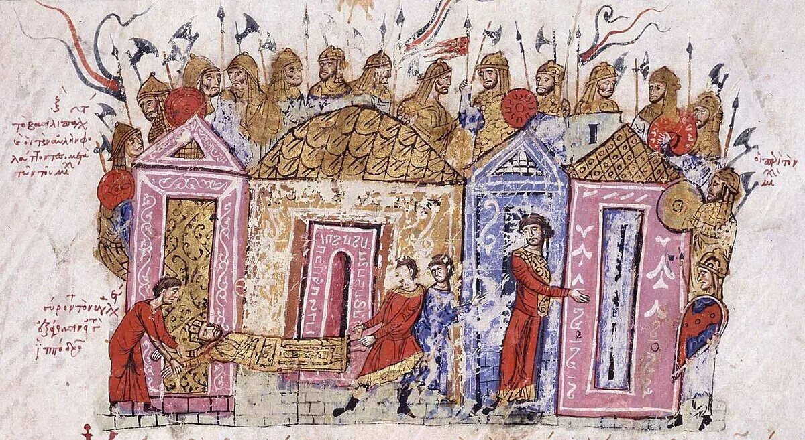

Русско-Византийские отношения
Многогранность связей
Отношения Древней Руси и Византии в X веке были сложными и многогранными. Они включали военные конфликты, торговое партнёрство, дипломатические переговоры, культурный обмен и, в конечном итоге, религиозное единение [[2]]. Эти отношения во многом определили дальнейшее историческое развитие русского государства.
Византия была для Руси главным «окном» в развитый мир — источником товаров, технологий, письменности, искусства и духовных ценностей. Русь, в свою очередь, представляла для Константинополя как военную угрозу, так и потенциального торгового партнёра и союзника [[7]].
Формы русско-византийского взаимодействия
- Военные: походы русских князей на Константинополь (860, 907, 941, 944, 971 гг.)
- Торговые: регулярная торговля через путь «из варяг в греки», русская колония в Константинополе
- Дипломатические: договоры 907, 911, 944 годов; посольства; династические переговоры
- Культурные: заимствование архитектурных традиций, иконописи, прикладного искусства
- Религиозные: миссионерская деятельность, крещение отдельных князей, массовое крещение Руси
- Военно-союзнические: служба русских воинов в византийской армии (варяжская гвардия)
Хронология основных событий
| Год | Событие | Результат |
|---|---|---|
| 860 | Первый поход Руси на Константинополь (Аскольд и Дир) | Осада города, заключение перемирия |
| 907 | Поход Олега на Царьград | Торговый договор, льготы для русских купцов |
| 911 | Договор Олега с Византией | Подробный торгово-правовой договор |
| 941 | Поход Игоря на Византию | Поражение русского флота от «греческого огня» |
| 944 | Второй поход Игоря | Новый договор, менее выгодный для Руси |
| 957 | Посещение Ольгой Константинополя | Крещение Ольги, дипломатическое сближение |
| 971 | Война Святослава с Византией | Договор о ненападении, уход русских с Балкан |
| 988 | Крещение Владимира | Принятие христианства, династический брак с Анной |
Торговые отношения
Русские купцы регулярно посещали Константинополь, где существовала специальная русская колония. Они торговали мехами, воском, мёдом, рабами, в обмен получая ткани, вина, пряности, ювелирные изделия, иконы и книги [[8]].
Договоры 907, 911 и 944 годов регулировали условия торговли, предоставляя русским купцам различные льготы и защиту.
Военные столкновения
Русские князья совершили несколько крупных походов на Византию: в 860, 907, 941, 944 и 971 годах. Некоторые из них были успешными (походы Олега), другие заканчивались поражением (поход Игоря 941 года) [[11]].
Византия также использовала русские военные отряды в своих войнах, особенно на Балканах.

Дипломатические браки
Византийская дипломатия активно использовала династические браки как инструмент внешней политики. В 988 году князь Владимир женился на византийской принцессе Анне, сестре императоров Василия II и Константина VIII [[36]].
Этот брак стал условием крещения Руси и символизирует высшую точку русско-византийского сближения. До этого византийские принцессы крайне редко выходили замуж за «варварских» правителей.